Kerala Assembly 2026 / Ottappalam AC 52
Build the base. Bank the share. Earn the next cycle.
A campaign strategy case study on repositioning Major A.K. Raveendran, SM from hard-edged soldier-filmmaker to prestige local challenger, and turning a difficult Left-held seat into BJP's all-time high in Ottappalam.
01 / The Brief
The right target was not victory. It was a stronger floor.
The original strategy refused flattery. Ottappalam was a Left-held seat with a real BJP base, but not a seat where optimism could substitute for arithmetic. The brief was sharper: beat the old BJP high, convert persuadable voters, and leave behind a vote bank the next cycle could build from.
The campaign thesis was simple. Convert and turn out, in person. Do not preach.
Beat the high.
The 2016 BJP peak was 18.4%. The campaign closed at 25.0%.
Bank the share.
Raw votes rose from 25,056 in 2021 to 42,476 in 2026.
Convert segments.
The target universe: soft-UDF voters, youth, women, and latent BJP sympathisers.
Earn the runway.
A third-place finish was not hidden. It became the honest proof of a bigger base.
02 / The Seat
Ottappalam was not waiting to be won.
The seat had been CPI(M)-held since 2006. The BJP had touched a previous high in 2016, then softened in 2021. The 2026 field added one structural opening: the UDF backed P.K. Sasi, an independent and former CPI(M) figure, creating a real three-cornered contest.
That opening made votes available. The work was making them choose Major Ravi.
Chart 01 / BJP vote share
The 20-year climb broke upward in 2026.
Source: campaign source deck, IndiaVotes/ECI-derived constituency data, 2006-2026.
Final count / Ottappalam 2026
Candidate
Votes
Share
K. Premkumar / CPI(M)
75,362
44.3%
P.K. Sasi / Independent
48,585
28.6%
Major Ravi / BJP
42,476
25.0%
Result cross-checked with the local IndiaVotes CSV and public result reporting.
03 / The Repositioning
Prestige in. Bombast out.
The single most important decision was to retire the dominance face and project the prestige face. Not the war-room caricature. Not celebrity aggression. A decorated local son, returning to ask for trust.
The visible system changed accordingly: Kerala attire, soft contact, elder respect, family presence, women-led visuals, and a restrained use of cultural capital.
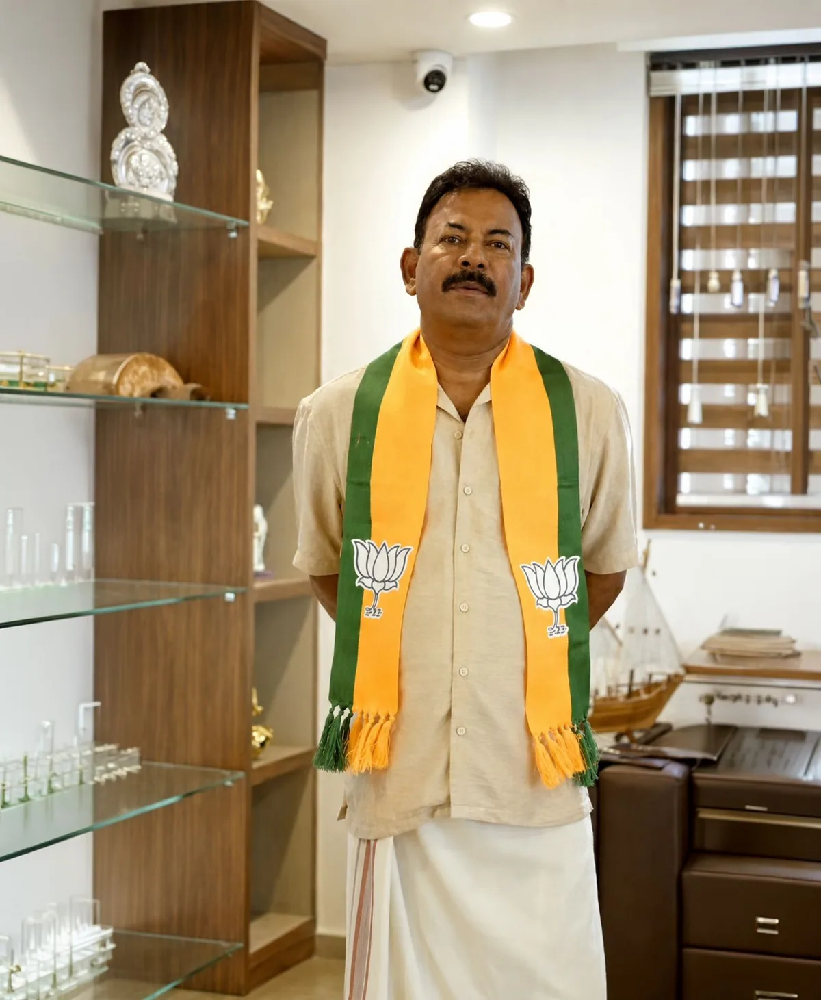
04 / Strategy Spine
Record. Roots. Reach.
The campaign architecture converted Major Ravi's public record into a local trust proposition. The work was not to make voters learn a new man. It was to make them read the known man correctly for this seat.
Competence made visible.
Army, NSG, gallantry, film discipline. A record that signals earned capability, not inherited power.
Belonging made immediate.
Born in Palakkad district, dressed and framed as a local elder, not a parachuted celebrity.
Visibility made useful.
Existing fame became earned media fuel only after the ground campaign created real scenes to amplify.
05 / Leadership Signals
The ancestral operating system underneath the campaign.
Voters read leaders through cues older than politics: prestige, presence, benevolence, belonging, fairness. Major Ravi already owned strength. The campaign had to build warmth and reduce threat.
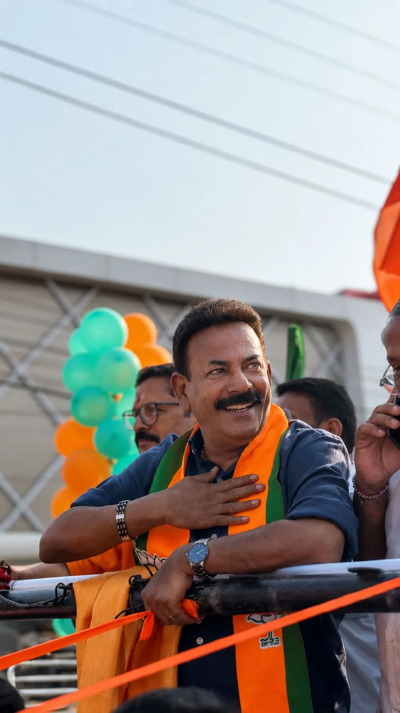
Prestige
Earned respect, not imposed force.
The military record stayed present, but the tone moved from command to dignity.
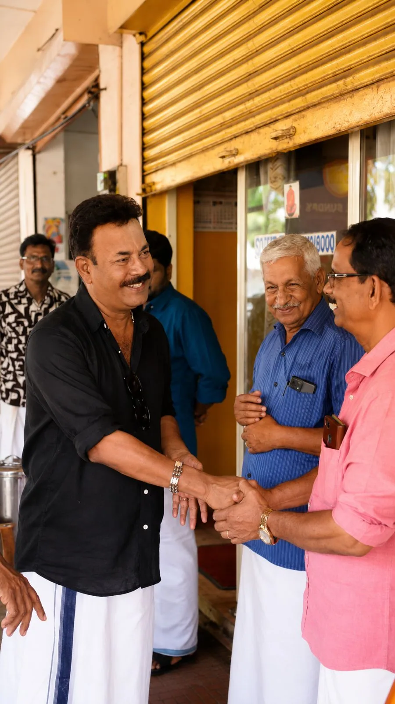
Presence
The handshake became the unit of work.
Retail contact made a high-profile candidate feel available and local.
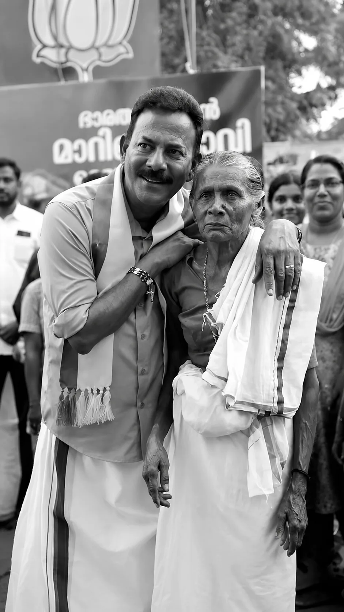
Benevolence
Warmth had to be proven.
The no-salary pledge and family imagery created costly, hard-to-fake care signals.
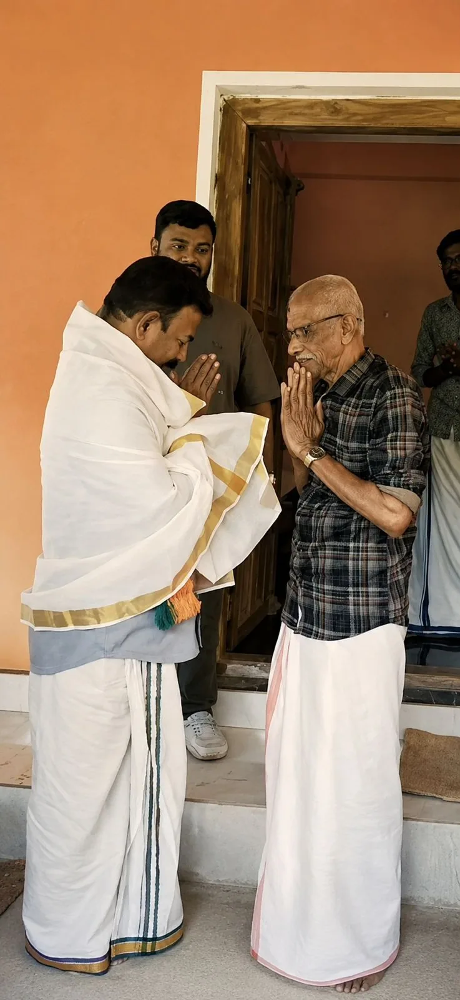
Belonging
One of us, on contact.
Respect rituals and local dress lowered distance before the message arrived.
06 / The Ground Game
Contact in. Votes out.
The work was not built around one rally photograph. It was built around repeatable public contact: street conversations, family selfies, women-led rally moments, elder visits, nomination visibility, and community greetings.
The feed followed the field. That order mattered.
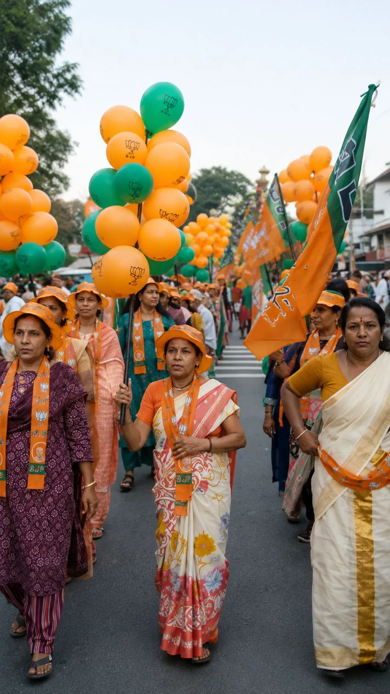
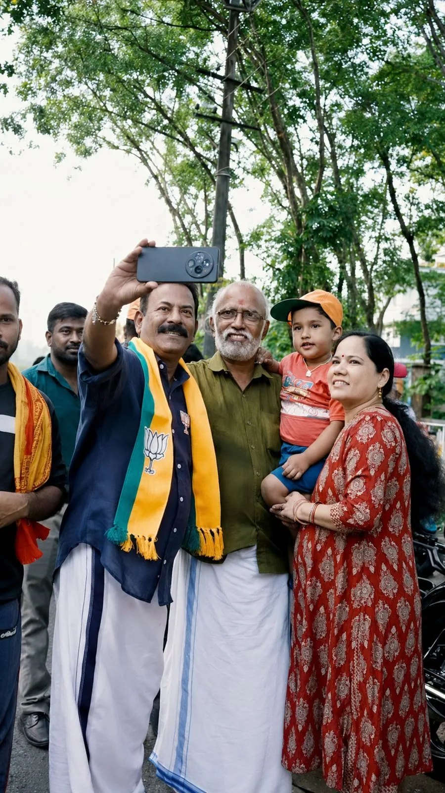
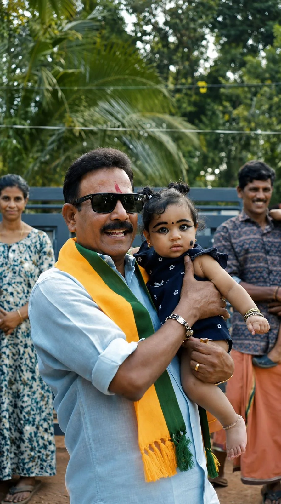
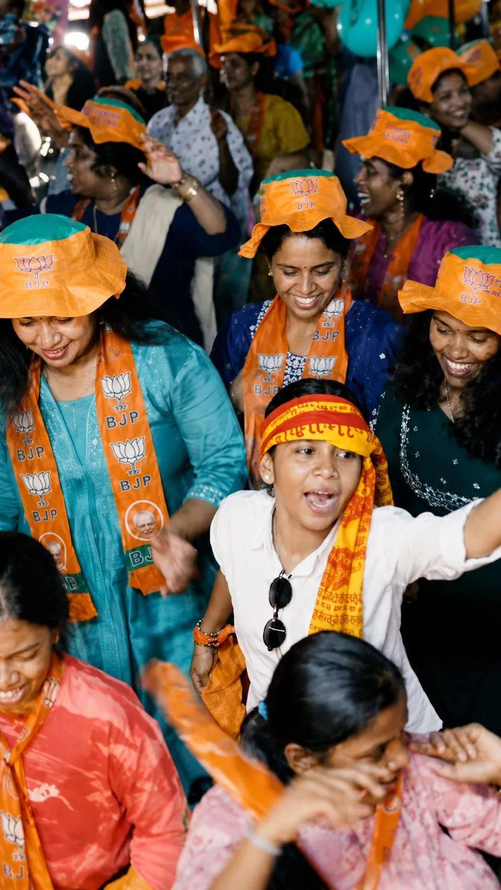
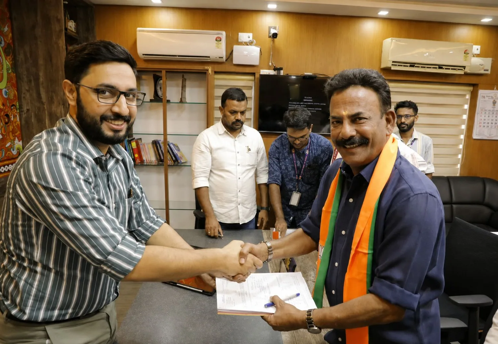
07 / Narrative Discipline
One man. One message. Every surface.
The message stayed narrow: patriotism, family values, youth connect, harmony, and the man before the party. The name "Major Ravi" did the first layer of persuasion before the campaign copy began.
Cultural capital was visible, but not spent carelessly. The Mohanlal association stayed as context, not a borrowed endorsement.
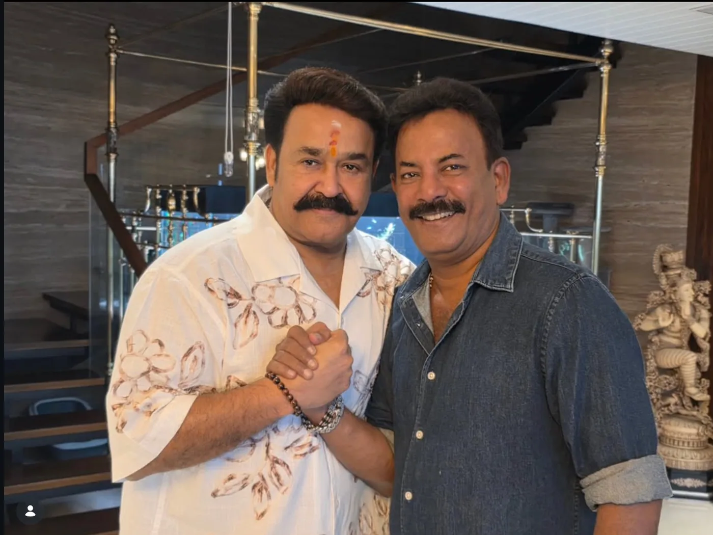
08 / Earned Media
The story was the spend.
A decorated soldier-filmmaker contesting a Left fortress was inherently newsworthy. The campaign's job was to give media a disciplined frame to repeat: record, roots, reach, and a candidate making a tough-seat gamble with visible local work.
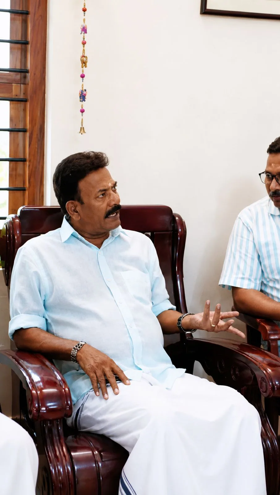
InterviewsConfidence without chaos.
The media posture projected conviction while avoiding unnecessary escalation.
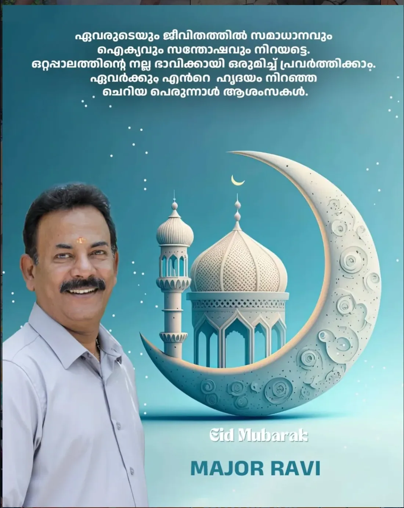
HarmonyDo no harm.
In a plural seat, threat reduction was strategy, not softness.
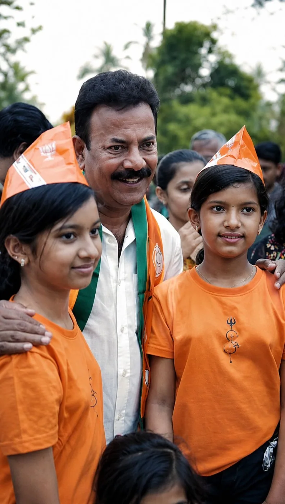
Social FeedGround content scaled.
The campaign imagery translated field presence into repeatable public proof.
09 / The Signature Moment
A manifesto in one sentence.
No MLA salary. Use it for the poorest girl's wedding in every panchayat, every year.
The line worked because it was specific, costly, and repeatable. It converted a hard image into a provider image without asking voters to forget the soldier.
10 / What Moved The Vote
Honest attribution, not a victory lap.
The result was not created by one factor. It came from a structural opening plus a candidate brand strong enough to use the opening. The campaign did not defeat the Left base. It expanded the BJP footprint inside a hard seat.
Candidate brand and recognition
High
Face-to-face presence
High
Fractured anti-Left field
High
Women-focused mobilisation
Medium
Earned media reach
Medium
11 / The Outcome
A record, built.
Major Ravi finished third. The campaign still hit the strategic target: highest-ever BJP raw vote and vote share in Ottappalam, with 42,476 votes and 25.0%. In a seat where victory was not the honest baseline, the result banked a larger floor for the next cycle.
Best BJP share recorded in the seat.
Vote-share lift from 2021.
Raw vote growth from 2021.
Honest caveat
The UDF-backed independent created a structural opening. That opening explains why votes were available. The campaign case is why a large share of them moved to Major Ravi.
12 / The Doctrine
Five rules that travel.
- Define the right win before the campaign begins.
- Convert the candidate's record into a voter-readable signal.
- Use ground contact as the content engine.
- Let data choose the target universe, not enthusiasm.
- Own the asterisk. Keep the credit.
Download PDF
Read the work behind the website.
The completed retrospective deck is bundled with this site for review.
About the strategist
Hemanth Lal
Strategic Brand Consultant working at the intersection of brand strategy, behavioral psychology, political communication, and market intelligence. The work turns records into reputations, and reputations into support.